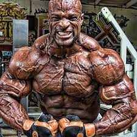

Historia del culturisme:
La paraula culturisme procedeix del francès. Es considera que va ser a França en els segles XVIII XIX on va tenir lloc el naixement d'una disciplina esportiva que tenia com a finalitat l'estètica, paraula que entronca directament amb la cultura física
Durant el segle XIX, el culturisme va començar a evolucionar cap a una disciplina esportiva més formalitzada, gràcies a figures com "Eugen Sandow", qui és considerat el pare del culturisme modern
"Eugen Sandow" un dels pilars que va donar a conèixer el culturisme
Sandow va desenvolupar un sistema d'entrenament basat en l'entrenament de força i una dieta rica en proteïnes, i també va contribuir a la popularitat de l'esport en albergar les primeres competicions de culturisme.
Historia del culturisme al segle XX:
En les primeres dècades del segle XX, el culturisme va guanyar cada vegada més adeptes i es va desenvolupar com a esport. Es van crear noves competicions i es van establir normes i regles per als participants.
També han sorgit noves figures influents en el món del culturisme, com "Joe Weider", fundador de la Federació Internacional de Culturisme i Fitnes (IFBB) i fundador de la revista Muscle i Fitnes. Aptitud física.
Historia del culturisme a les dècades del 1950/1960
En les dècades de 1950 i 1960, el culturisme es va convertir en un fenomen cultural gràcies a figures com"Arnold Schwarzenegger"
que va ostentar el títol de Mr.Olympia en múltiples ocasions. Olympia, que després es va convertir en estrella de cinema.
Historia del culturisme a les decades del 1970/1980
Durant les dècades de 1970 i 1980, el culturisme va continuar creixent i va aconseguir nivells de popularitat sense precedents. Es van formar nous equips de competició, es van canviar els mètodes d'entrenament i les dietes.
També van sorgir noves estrelles del fitness, com "Lee Haney" i "Ronnie Coleman", que van guanyar el títol de Mr.Olympia diverses vegades, i es van convertir en uns referents per al món del culturisme.
Historia del culturisme actualment
En el segle XXI, el culturisme continua desenvolupant-se i té seguidors a tot el món. Es van formar nous equips de competició i es van millorar les instal·lacions tècniques i d'entrenament. Existeix un interès creixent en la salut i el benestar, així com un interès cada vegada major en la nutrició i la prevenció de lesions. El fitnes s'ha convertit en un moviment que promou un estil de vida saludable i actiu.